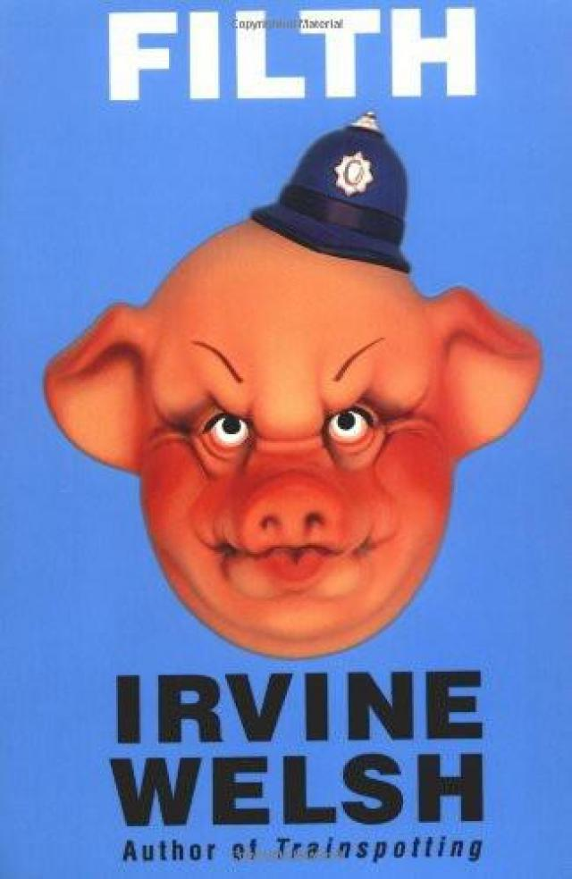
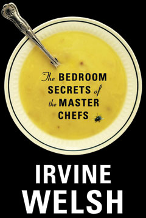

Ирвин Уэлш: галерея
Портрет для газеты «The Times» (Saverio Truglia, 2016)
Дэнни Бойл. «На игле» (англ. Trainspotting, 1996)

Пол Макгиган. «Кислотный дом» (англ. Acid House, 1998)

Роб Хейдан. «Экстази» (англ. Irvine Welsh's Ecstasy, 2011)

Джон С. Бэрд. «Грязь» (англ. Filth, 2013)

Дэнни Бойл. «T2: Трейнспоттинг» (англ. T2 Trainspotting, 2017)
«На игле» (англ. Trainspotting, 1993)
«Кошмары аиста Марабу» (англ. Marabou Stork Nightmares, 1995)
«Дерьмо» (англ. Filth, 1998)

«Клей» (англ. Glue, 2001)
«Порно» (англ. Porno, 2002)
«Альковные секреты шеф-поваров» (англ. The Bedroom Secrets of the Master Chefs, 2006)

«Преступление» (англ. Crime, 2008)
«Героинщики» (англ. Skagboys, 2012)
«Сексуальная жизнь сиамских близнецов» (англ. The Sex Lives of Siamese Twins, 2014)
«Хорошая поездка» (англ. A Decent Ride, 2015)

«Резьба по живому» (англ. The Blade Artist, 2016)
«Брюки мертвеца» (англ. Dead Men's Trousers, 2018)